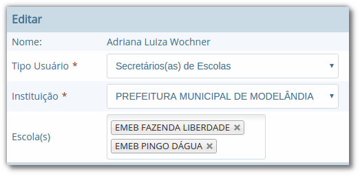

Configurações
Nesta seção apresentaremos como são configurados os usuários que podem acessar o sistema e como podem ser atribuídas suas permissões, bloqueios e demais configurações de segurança, assim como as demais ferramentas gerenciais oferecidas pelo sistema.
Permissões (tipos de usuário/usuários)
O cadastro de Tipo de usuários define as categorias de usuários existentes atualmente, as quais garantem um nível hierárquico de acesso a determinadas funcionalidades do sistema.
Localização: Módulo Configurações > Permissões > Tipos de usuários
Estas categorias de usuários são descritas a seguir:
| Categoria | Como funciona? |
|---|---|
| Poli-institucional | O nível 1, Poli-institucional, tem acesso a qualquer funcionalidade dos módulos Escola e Biblioteca para todas as instituições (prefeituras) cadastradas no sistema. |
| Institucional | O nível 2, Institucional, tem acesso às mesmas funcionalidades do nível Poli-institucional, exceto o cadastro e exclusão do tipo de usuário e o cadastro e exclusão de instituição. |
| Escola | O nível 3, Escola, tem acesso restrito as funcionalidades da(s) escola(s) a qual o usuário for vinculado, respeitando também as permissões definidas no cadastro de funcionários do módulo Configurações. |
| Biblioteca | O nível 4, Biblioteca, tem acesso restrito as funcionalidades da(s) biblioteca(s) da(s) escola(s) a qual o usuário for vinculado, respeitando também as permissões definidas no cadastro de funcionários do módulo Configurações. |
O cadastro de Usuários, propriamente dito, permite o cadastro dos usuários que acessarão o sistema, respeitando o seu tipo e as demais atribuições de acesso para a instituição, escola ou biblioteca que será vinculado.
Localização: Módulo Configurações > Permissões > Usuários

Ferramentas
Auditoria e Backups
No módulo de Configurações, o usuário de nível gerencial, terá a possibilidade tanto de verificar a Auditoria geral de uma referida tela em um período de datas, podendo analisar todas as alterações efetuadas no determinado campo ou tela, assim como a possibilidade de baixar o Backup do sistema do dia desejado.
Localização: Módulo Configurações > Ferramentas > Auditoria geral / Backups
O backup é disponibilizado para download de forma automática pelo sistema, sempre a partir da meia noite, momento em que é possível fazer a verificação de todos os dados preenchidos durante o dia.
Exportação de usuários
A ferramenta de Exportação de usuários, foi desenvolvida para auxiliar no trabalho efetuado pelo gestor escolar, e permite ao mesmo que exporte todos os usuários cadastrados e ativos no sistema, assim como a exportação somente de um tipo de usuário.
Localização: Módulo Configurações > Ferramentas > Exportação de usuários